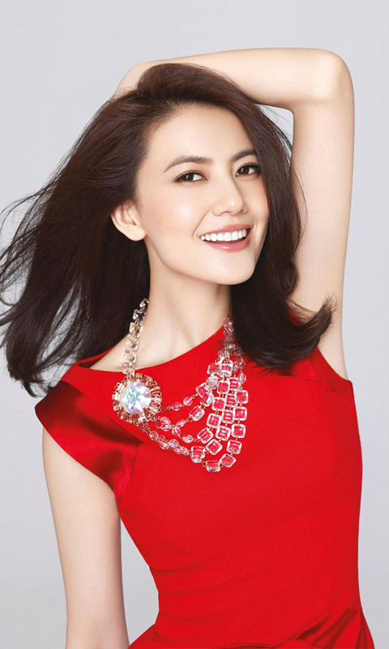

about
gaoyuanyuan
About gaoyuanyuan about gaoyuanyuan about gaoyuanyuan
700 3.2 css csscsscsscsscss高圆圆，中国女演员，1979年10月5日出生于北京市丰台区云岗一个普通的知识分子家庭。1996年高圆圆被广告公司发掘，随后拍摄了大量广告，成为了广告圈中的模特。1997年高圆圆出演了她的第一部电影《爱情麻辣烫》，从此开始了她的演员生涯。2001年高圆圆参演的电影《十七岁的单车》获得柏林国际电影节最佳影片银熊奖。
2003年高圆圆首次尝试古装武侠剧，在《倚天屠龙记》电视剧中饰演峨眉派掌门周芷若。2005年主演的电影《青红》获得戛纳国际电影节评审团大奖，[2] 同年成为荷兰国际球根花卉中心中国首届百合小姐。2008年到2009年，拍摄电影《南京！南京！》，该片获圣塞巴斯蒂安国际电影节最佳电影金贝壳奖。
2012年4月9日，许多媒体爆料了高圆圆与赵又廷的地下恋情，刚刚结婚的高圆圆在被问及是否是奉子成婚时，她也大方否认了怀孕传闻
What--------40%
What--------30%
What--------30%
GAO YUANYUAN
IS WHO
一个知性美丽的女人
高圆圆1997年被导演张扬看中接拍了电影《爱情麻辣烫》，扮演了女学生荷玲，高圆圆开始被大家所熟悉。她都延续了这一形象。不同的是，高圆圆并没有像其它大陆演员一样报考专业的艺术院校，而是就读于一所普通高校中国工运学院（现改名为中国劳动关系学院）。在大学期间间断出演了一些电影与电视剧，以清丽单纯的邻家女孩形象而为人所知[10]2000年，奥运会期间频频在电视上播出的清嘴含片广告让她为大家所熟知，  人们一度称她为“清嘴女孩”[11-13]2001年高圆圆参加拍摄的电影《十七岁的单车》入围第51届柏林影展竞赛单元，[10].2003年，高圆圆首次尝试古装武侠剧，在金庸经典名著《倚天屠龙记》电视剧中饰演峨眉派掌门周芷若。电视剧一经播出即受到观众喜爱，既秀若兰芝又蛇蝎歹毒的周芷若得到观众认可，颠覆了以往反派人物的形象。
2005年9月1日，她更是在百合小姐选拔赛中领先徐静蕾、董洁、刘亦菲等女星，获得了首届中国“百合小姐”称号[10] 2005年，随着电影《青红》在国内外的播映，高圆圆开始改变以往在银幕上单一的清纯形象，这部电影也参加了第58届戛纳电影节并获得“评委会奖”。之后与成龙合作拍摄《宝贝计划》，高圆圆本人也开始登上金像奖、金鹰奖的舞台。电影《男才女貌》中高圆圆的形象依然是清纯可人，但在《第三个人》中她有着颠覆性的表演，只是这部影片未有太大的影响力[10]
2008年到2009年，拍摄的电影《南京！南京！》对高圆圆有着重要的影响，因为长达一年的时间围绕这部令人感到压抑电影，
高圆圆高圆圆高圆圆高圆圆...............啦啦
高圆圆高圆圆高圆圆高圆圆..............啦啦啦
高圆圆高圆圆高圆圆高圆圆.............. 啦啦
ONE TWO
THREE FORE FIVE
hello world hello wolrd
hello world
“hello world hello world hello world hello world hello world hello world hello world hello world ”